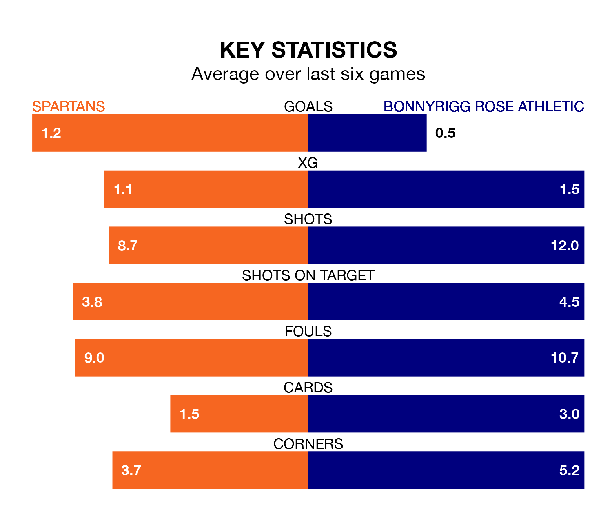

Bonnyrigg Rose Athletic travel to Spartans on Saturday in League Two.
The visitors come into the game on the back of a draw in their last match, having tied with Peterhead 0-0 away.
The Spartans, meanwhile, won their last match, 2-1 against Stranraer, with their goals scored by Ayrton Sonkur.
In Blair Henderson, Spartans have the league's most on-form striker so far this season. He has notched 13 goals in 24 appearances.
His goal rate of one every 163 minutes is quicker than that of Neil Martyniuk, Bonnyrigg Rose's top scorer with a goal every 234 minutes, and a total of nine goals in 24 games.
With 38 goals in 24 games so far this season, the Spartans are the league's third-highest scorers with 1.6 goals per game. And they are conceding fewer than average, letting in 26 goals at a rate of 1.1 per game.
Athletic, meanwhile, are average scorers, with 1.3 goals per game. They have also conceded 1.3 goals per game.
The hosts are third in the table after 24 games, of which they have won 11 and drawn seven, earning 40 points.
The away side are two places behind Spartans in fifth, with seven wins and eight draws putting them on 29 points.
In the last five years, Spartans and Bonnyrigg Rose have played each other on five occasions. Bonnyrigg Rose won three of them and they drew twice.
On average, the Spartans scored 1.4 goals and Bonnyrigg Rose 2.2 in those matches.
Their last meeting was on September 30, when they played out a 2-2 draw.
Spartans are in mixed form in League Two, with two wins and two draws from their last six games.
With a win and four draws over that period, Bonnyrigg Rose's form is slightly worse – they have taken seven points from 18, compared to the Spartans's eight.
Updated: 10:08 (UTC), 23/02/24